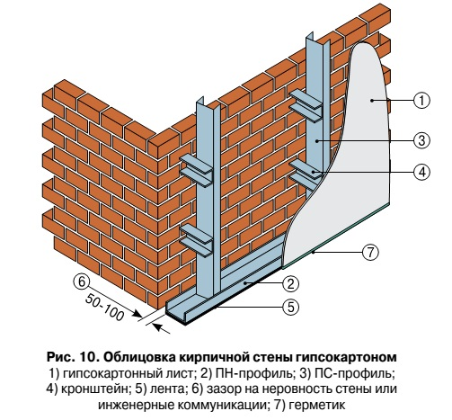
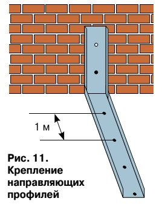
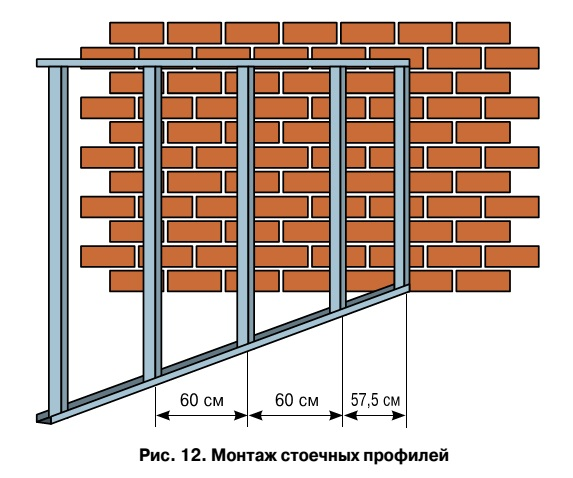
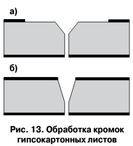
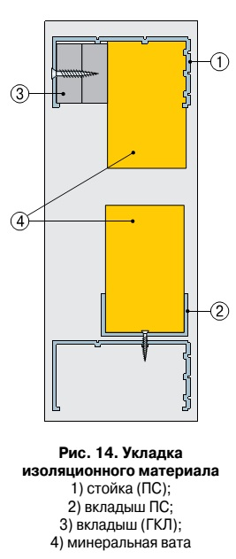
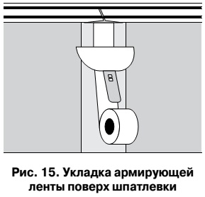
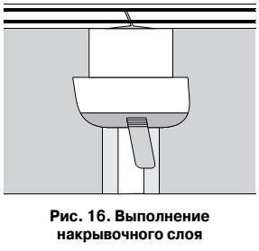
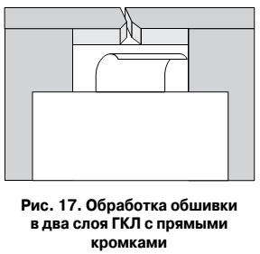
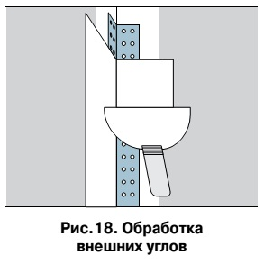
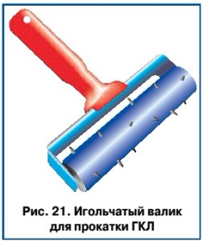

Отделка стен гипсокартоном (часть 2)
Среди тех, кто в процессе возведения дома уже добрался до отделочных работ, постоянно идут споры о способах отделки стен. Одни горой стоят за оштукатуривание, другие и слышать не хотят об этом довольно грязном способе, предпочитая выложить стены и потолок гипсокартонными плитами. Этот спор бесконечен и ввязываться в него нет смысла. Мы решили подойти к проблеме бесстрастно.
Монтаж перегородок ГКЛ
Существуют два основных варианта использования гипсокартона для возведения стен и устройства межкомнатных перегородок. Во-первых, это выполнение перегородок цели-ком из ГКЛ (рис. 9). Во-вторых, облицовка кирпичных, бетонных или иных стен гипсокартонными листами по металлическим профилям (рис. 10).
Перегородки, полностью изготовленные по описываемой нами технологии, имеют не-сколько модификаций. Металлические профили могут быть смонтированы в одинарный или двойной каркас, а также в двойной каркас с внутренним пространством для прокладки различных инженерных коммуникаций. Кроме того, существует разновидность перегородок с деревянным каркасом, облицованным гипсокартонными листами.
Металлический каркас может быть облицован ГКЛ в один или два слоя. Как правило, облицовка в один слой производится по одинарному металлическому или деревянному каркасу. Облицовка в два слоя может быть выполнена как по одинарному, так и по двойному металлическому или деревянному каркасам.

Вес одного квадратного метра стены составляет примерно 25 кг при облицовке в один слой, и в два раза больше, если обшив-ка гипсокартонными листами производится в два слоя. Максимальная высота перегородки может колебаться от 4 до 6,5 м в зависимости от ее конструкции. Чем больше поперечное сечение применяемых стоечных профилей и чем меньше их шаг, тем большей высоты можно возвести перегородки.
Следует отметить, что двойной металлический каркас с внутренним пространством для инженерных коммуникаций предполагает меньшую допустимую высоту стен, нежели обычный двойной каркас.
Это объясняется тем, что в первом случае используются стоечные профили с меньшим общим поперечным сечением, так как часть пространства занимают полости для коммуникаций. При выполнении перегородок из элементов системы Knauf производится двухсторонняя облицовка каркаса гипсокартонными панелями.
Помимо этого, возможно использование металлических профилей и гипсокартонных листов для облицовки уже существующих или заново выстроенных из других материалов стен и перегородок. Для таких случаев имеется несколько конструктивных решений.
Прежде всего, можно просто приклеить гипсокартонные листы или гипсовые комбинированные (с изоляционным материалом) панели непосредственно к базовой стене. В данном случае максимальная высота облицовки определяется высотой листа гипсокартона или комбинированной панели.
Выполнение металлического каркаса на базовой стене имеет несколько особенностей. Направляющие и стоечные профили скрепляются в каркас с таким расчетом, чтобы между ним и стеной оставалось пространство в 60-100 мм для прокладки инженерных коммуникаций.
Высота такой облицовки может достигать 4-4,25 м. При этом возможно использование крепежных кронштейнов. Кронштейны монтируются к базовой стене с вертикальным шагом 1,5-2 м, и к ним крепятся стоечные профили, что позволяет увеличить максимальную высоту облицовки до 7 м.
Металлический каркас для облицовки гипсовыми панелями может быть собран из специальных профилей (потолочного профиля ПП 60/27) и прямых подвесов. Прямой подвес – это металлический элемент, состоящий из спинки, которая крепится к стене или потолку, и перфорированных полок.
Подвесы крепятся к базовой стене с шагом 1,5 м по вертикали. На них монтируются специальные профили, к которым и прикрепляется гипсокартонная обшивка. Расстояние между стоечными или специальными профилями определяется шириной гипсокартонного листа.
Монтаж металлоконструкций
Монтируют стены и перегородки после окончания всех строительных работ, связанных с применением жидких растворов, но до выполнения чистых полов. Рассмотрим последовательность операций.

Прежде всего необходимо произвести разметку возводимых перегородок. Сначала ее выполняют на полу (при этом можно использовать шнуробойное приспособление). Затем при помощи отвеса эта разметка переносится на потолок. На направляющие и пристенныестоечные профили наклеивается упругая звукоизоляционная лента.
Направляющие профили, согласно разметке, крепятся дюбелями с шагом один метр к полу и потолку (рис. 11). Таким же образом монтируются пристенные стоечные профили. Остальные стоечные профили нарезаются, исходя из высоты помещения, с допуском (в сторону уменьшения) не более 10 мм.
Далее, стоечные профили устанавливаются с шагом 600 мм в верхние и нижние направляющие и закрепляются методом просечки или шурупами (рис. 12). При необходимости стоечные профили могут быть скреплены друг с другом внахлест (для ПС 50 – 0,5 м, для ПС 75 – 0,75 м, для ПС 100 – 1 м).
Обшивка каркаса
После сборки металлического каркаса можно приступать к его обшивке. Прежде всего, на ровной поверхности при помощи специального резака или остро отточенного ножа необходимо нарезать гипсокартонные листы в соответствии с высотой перегородки. Сначала разрезается наружный слой картона и надрезается гипсовый сердечник.

Затем лист укладывается на край стола, гипсовый сердечник переламывается, и слой картона на оборотной стороне также разрезается. Получившаяся кромка обрабатывается рубанком. Заделка швов в местах стыка листов может выполняться с помощью армирующей ленты или без нее. Соответственно, различаются и методы обработки кромок.
Если используется армирующая лента, необходимо рубанком снять на кромке ГКЛ фаску под углом 45 градусов на одну треть толщины листа (рис. 13-а). Слой картона в месте укладки армирующей ленты удаляется, края картона зашкуриваются. Если шов выполняется без применения армирующей ленты, фаска снимается под углом 22,5 градуса на две трети толщины листа, края картона также зашкуриваются (рис. 13-б).
После подготовки ГКЛ можно приступать к их монтажу непосредственно на металлический каркас. Гипсокартонные листы устанавливаются вертикально и закрепляются на каркасе саморезами с шагом 250 мм, при этом верхние кромки плотно прижимаются к потолку. Крепление производится от угла, по двум взаимно перпендикулярным друг другу направлениям.
Сверху и снизу гипсовые панели крепятся непосредственно к направляющим профилям на расстоянии не менее 10 мм от кромки (если кромка не облицована картоном, расстояние следует увеличить до 15 мм). Местоположение шурупа-самореза определяется продольными канавками на полке стоечного профиля.

При использовании саморезов и электродрели со специальной насадкой или шуруповерта предварительного сверления отверстий не требуется. В процессе монтажа необходимо следить за тем, чтобы шурупы вворачивались в гипсокартонные листы под прямым углом и заходили вглубь профиля не менее чем на 10 мм.

Головки саморезов следует утапливать в толщу ГКЛ на глубину не менее 1 мм и зашпаклевывать. Если шуруп дефектный, или он неправильно размещен, его следует удалить, после чего поставить новый на расстоянии около 50 мм от прежнего.
В тех случаях, когда в полость перегородки укладывается звуко- или теплоизоляционный материал (пенополистирол или минвата), необходимо предусмотреть их надежное крепление. Это можно сделать при помощи вкладышей из гипсокартона или фрагментов стоечного профиля меньшего сечения (рис. 14).
После закрепления листов гипсокартона на металлическом каркасе можно приступать к заделке швов в местах стыков.
Укладка армирующей ленты
Гипсокартонные листы, используемые для облицовки, имеют утонченные кромки для формирования швов. Шпателем на стык наносится слой шпаклевки. Далее одним движением сверху вниз уложенная шпаклевка выравнивается, и ее излишки удаляются. Затем, не дожидаясь затвердевания, на шпаклевку укладывается армирующая лента, при этом шпателем она вдавливается в массу шпаклевки (рис. 15).

Более широким шпателем на армирующую ленту наносится еще один слой шпаклевки, который называется накрывочным или выравнивающим (рис. 16). Просохший шов подвергается дополнительной обработке с использованием затирки или наждачной бумаги, при этом необходимо избегать повреждения облицовочного картона.

Обработка обшивки в два слоя ГКЛ с прямыми кромками
Когда обшивка производится в два слоя, внутренний можно выполнять из гипсовых панелей с прямыми кромками. В этом случае кромки обрабатываются таким же образом, а для выполнения шва применяется более широкий, чем обычно, накрывочный слой шпаклевки (рис. 17). Это обуславливается тем, что при использовании армирующей ленты, применительно к ГКЛ без утонченных кромок, возможно образование небольшой выпуклости.

Обработка внешних углов
При наличии в перегородке внешних углов применяются угловые профили. Они устанавливаются на предварительно уложенный слой шпаклевки и сверху накрываются еще одним слоем (рис. 18). Внутренние углы обрабатываются шпаклевкой и оформляются согнутой под прямым углом армирующей лентой.

Устройство дверного проема
При выполнении перегородок по рассматриваемой нами системе зачастую требуется устройство дверных проемов. В этом случае боковые опорные стоечные профили устанавливаются, исходя из ширины дверной коробки. Сверху монтируется дополнительный направляющий профиль (открытой частью вверх). Далее, междуверхним и дополнительным направляющими профилями устанавливается фрагмент стоечного профиля, на котором будет располагаться стык гипсовых панелей (рис. 19).
Если производится облицовка в два слоя, то дополнительных стоечных профилей над дверной коробкой должно быть также два. В этом случае внутренний слой облицовки крепится к одному стоечному профилю, а наружный – к другому. Внутрь примыкающих сбоку к дверной коробке стоечных профилей помещаются деревянные бруски. Непосредственно к этим брускам крепятся конструктивные элементы дверной коробки.
В дополнение к вышесказанному, необходимо отметить еще несколько важных моментов. Иногда может возникнуть ситуация, при которой приходится выполнять горизонтальные стыки между ГКЛ. В этом случае гипсовые панели следует закреплять вразбежку, а под образовавшиеся стыки в качестве перемычек устанавливать дополнительные направляющие профили. Если производится двухслойная облицовка, внутренние и внешние швы не должны совпадать.
Швы внутреннего слоя можно формировать без использования армирующей ленты, только с помощью шпаклевки. Расстояние между шурупами внутреннего слоя облицовки может быть увеличено до 750 мм.
В тех случаях, когда перегородки устанавливаются в помещениях с повышенной влажностью, для облицовки следует использовать влагостойкие гипсовые панели. Если же при использовании обычных листов предусмотрена дальнейшая облицовка плиткой, места возможного попадания на поверхность ГКЛ влаги необходимо подвергнуть дополнительной гидроизоляции. Электрические и иные коммуникации следует размещать таким образом, чтобы исключить возможность их повреждения краями профилей или остриями шурупов.
Устройство криволинейных поверхностей
Одно из наиболее выдающихся качеств гипсокартонных листов – их пластичность во влажном состоянии. Это дает возможность выполнять криволинейные поверхности, и посредством этого решать самые разнообразные архитектурные задачи.
Для таких работ применяются ГКЛ шириной 600 мм. Минимальный радиус изгиба зависит от толщины листа. При толщине 12,5 мм радиус изгиба – не менее 1000 мм, при толщине 9 мм – 500 мм, если же лист имеет толщину 6,5 мм, минимальный радиус изгиба составляет 300 мм. Можно заметить, что с уменьшением толщины листа гипсокартона возможный радиус изгиба также уменьшается.
Для монтажа изогнутых ГКЛ используются специальные про-фили ПП 60/27 или направляющие профили, особым образом подготовленные. Простейший пример применения таких листов – это закругления угловых поверхностей. Основное отличие в технологии монтажа таких конструктивных элементов – это поперечное расположение гипсовых панелей по отношению к стоечным профилям.
Рассмотрим порядок выполнения закругленного угла. Прежде всего, необходимо изготовить шаблон, по которому производится изгиб ГКЛ (рис. 20). Из гипсокартона вырезаются два боковых элемента необходимого радиуса (он должен быть чуть меньше радиуса изгиба ГКЛ).
Из того же гипсокартона изготавливаются распорные плиты, которые определяют общую ширину шаблона. Эта ширина также должна быть немного меньше ширины ГКЛ. Далее с помощью деревянных брусков и шурупов шаблон собирается и скрепляется. Его необходимо оборудовать зажимами для фиксации торцевых кромок изгибаемого листа (для этого используются обрезки металлических профилей).
С одной стороны гипсокартонный лист прокатывается игольчатым валиком (рис. 21).
Именно эта сторона впоследствии будет деформироваться. Для выпуклых форм она будет внутренней, для вогнутых – внешней. Далее лист наколотой стороной вверх укладывается на прокладки и смачивается водой, при этом необходимо избегать попадания воды на непроколотую сторону листа. Если это произойдет, возможен разрыв гипсовой панели во время изгиба.
Увлажнение производят до насыщения гипсового сердечника (это можно определить по прекращению впитывания воды). Заготовка укладывается на шаблон, при этом ее центр должен совпадать с осью шаблона. Далее лист изгибается по намеченному радиусу и фиксируется в зажимах. ГКЛ фиксируется с помощью клейкой ленты,затем снимается с шаблона и устанавливается на просушку. Таким же образом обрабатываются следующие листы.
Монтаж криволинейного участка перегородки
После изготовления необходимого количества изогнутых элементов начинается монтаж криволинейного участка перегородки. Для этого на полу и потолке производится разметка для установки направляющих профилей, которые предварительно подвергаются специальной подготовке. А именно: с помощью ножниц по металлу наружная полка и спинка надрезаются до внутренней полки, причем надрезы следует производить параллельно друг другу (рис. 22).


{kind=link}
{kind=link}
{kind=link}
Познавательная статья, хорошая инструкция для тех кто хочет сделать сам. От себя добавлю, крепление направляющего и пристенного профиля можно производить с шагом меньше 1 м., ничего страшного в этом не будет ))